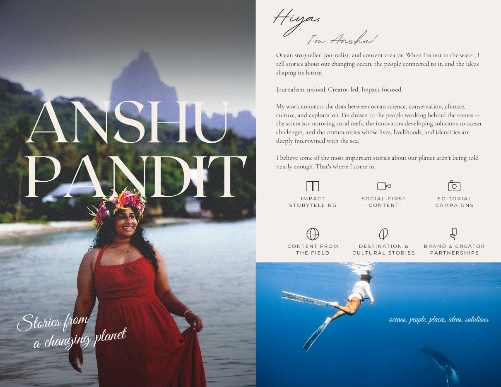
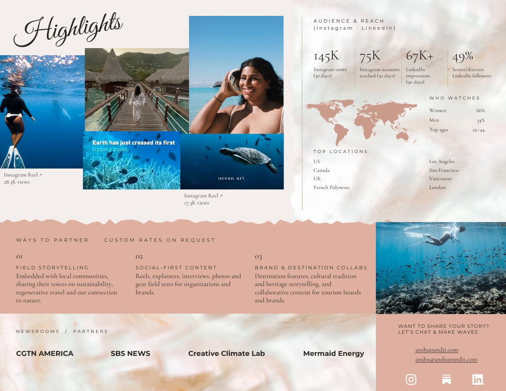

Journalism-trained. Creator-led. Impact-focused. I film my own stories in the field, with the interview depth of a newsroom and the look of cinema made for social. My work connects the dots between ocean science, conservation, climate, culture and exploration, and I'm drawn to the people working behind the scenes: the scientists restoring coral reefs, the innovators building solutions to ocean challenges, and the communities whose lives and identities are deeply intertwined with the sea.
Women 66%
Men 34%
Top ages 25 to 44
United States, Canada, United Kingdom, French Polynesia
Los Angeles, San Francisco, Vancouver, London
Figures from Instagram and LinkedIn analytics, as of November 2026.
Embedded with local communities, sharing their voices on sustainability, regenerative travel and our connection to nature.
Reels, explainers, interviews, photos and gear field tests for organizations and brands.
Destination features, cultural tradition and heritage storytelling, and collaborative content for tourism boards and brands.
Panels, fireside chats and talks on ocean storytelling, the blue economy and climate communication.
Narrative strategy and communications for ocean and blue economy organizations, NGOs, foundations and startups, including fractional roles.

